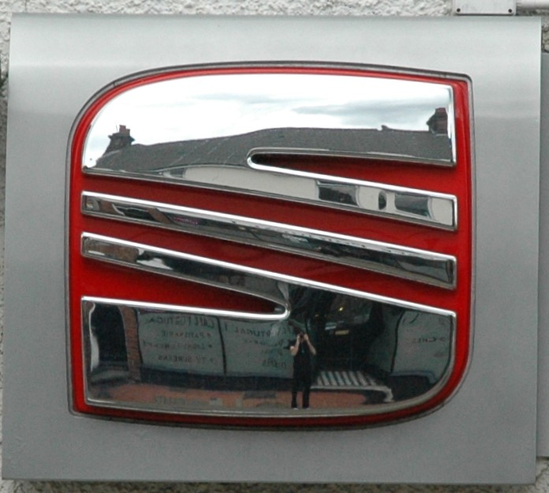

더바디샵 The Body Shop
더바디샵은 화장품을 윤리적 소비와 사회적 메시지를 담는 매개로 확장한 브랜드다. 제품의 효능만큼이나 동물실험 반대, 공정 거래, 환경 의식 같은 태도가 브랜드 선택의 이유가 된다.
최종 업데이트

더바디샵은 어떤 브랜드인가
더바디샵은 화장품을 윤리적 소비와 사회적 메시지를 담는 매개로 확장한 브랜드다. 제품의 효능만큼이나 동물실험 반대, 공정 거래, 환경 의식 같은 태도가 브랜드 선택의 이유가 된다.
더바디샵은 어떻게 봐야 할까
더바디샵은 화장품을 윤리적 소비와 사회적 메시지를 담는 매개로 확장한 브랜드다. 제품의 효능만큼이나 동물실험 반대, 공정 거래, 환경 의식 같은 태도가 브랜드 선택의 이유가 된다.
더바디샵은 어떻게 시작되고 성장했나
더바디샵은 자연주의 화장품 브랜드이다. 1976년, 아니타 로딕(Anita Roddick)이 영국의 브라이튼에서 설립했다.
현재 더바디샵은 로레알의 자회사로, 전 세계 65개국에 진출하여 3,300여개의 매장을 운영하고 있다.
더바디샵의 브랜드 아이덴티티는 무엇인가
더바디샵은 화장품과 환경보호를 연결한 최초의 기업이었다. 창업자 아니타 로딕은 사회와 환경의 긍정적인 변화를 만들기 위해 노력했고, 고객들의 브랜드 충성도를 이끌어냈다.
더바디샵은 기업이 선을 위한 동력원이 될 수 있다는 아니타 로딕의 혁신적인 믿음으로부터 시작되었다. 더바디샵은 진정한 아름다움을 전파하고, 긍정적인 사회 변화를 이끌기 위한 캠페인을 펼쳐 나가고 있다.
더바디샵의 대표 제품과 서비스는 무엇인가
더바디샵의 제품과 서비스는 뷰티·퍼스널케어 범주에서 해석됩니다.
더바디샵은 지금 어떤 상태인가
더바디샵 연혁 — 주요 사건은 언제였나
더바디샵 로고는 어떻게 변해왔나
대표 로고대표 브랜드 마크
BI/CI 아카이브보관 이미지 1자주 묻는 질문
더바디샵의 브랜드 아이덴티티는 무엇인가요?
더바디샵은 화장품과 환경보호를 연결한 최초의 기업이었다.
더바디샵의 대표 제품은 무엇인가요?
더바디샵의 제품과 서비스는 뷰티·퍼스널케어 범주에서 해석됩니다.
더바디샵는 어느 기업이 소유하고 있나요?
국가: 영국; 본사: 리틀햄프턴; 상위/소유 조직: 로레알; 산업: 소매
출처와 검증
브랜드명은 한글과 원어를 함께 표기하되 데이터에 없는 표기는 만들지 않습니다. 기원 국가·설립연도는 검수된 정의문에서 확인된 값을 우선하고, 없을 때만 공식 웹사이트 URL이 일치하는 위키데이터 개체의 값을 씁니다.